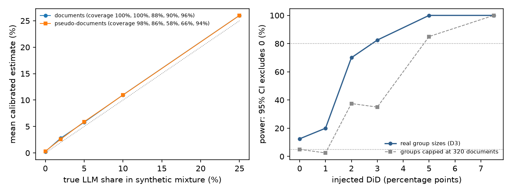
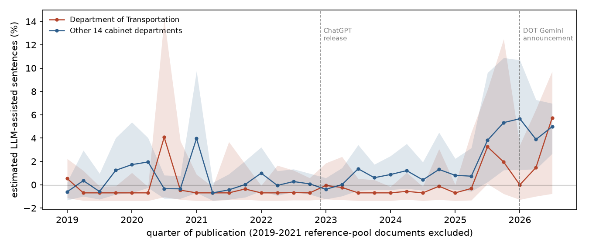

In plain terms
In January 2026 the US Department of Transportation (DOT) said it would use Google's Gemini to draft most new regulations. We asked whether that shows up in the text DOT publishes. If DOT really started drafting with an AI model, the share of AI-like sentences in its proposed and final rules should rise faster than in other departments' rules.
We estimated that share with a statistical method that compares word use against human-written rules from 2019-2021 and against rule text rewritten by five open AI models. We checked the method on synthetic mixtures before looking at any 2026 text. The 2026 files stayed locked until then.
The answer is no detectable DOT-specific change:
- DOT: its share rose by about 4.0 percentage points, from −0.4% (a value indistinguishable from zero) to 3.6%.
- Other departments: their share rose by about 3.4 points, from 1.6% to 5.0%.
- The difference: +0.6 points, with a 95% range of −4.3 to +5.1.
We had set in advance that a "no" verdict needed that range to stay below 5 points. It reaches 5.1, so the formal verdict is Inconclusive, by a hair.
The bigger pattern is government-wide. From mid-2025 every cabinet department's rules became somewhat more AI-like, months before DOT's announcement. We cannot tell how much of that is AI drafting and how much is the new administration's deregulatory vocabulary, which shares many of the same words.
What was done
Documents. Every proposed and final rule published from January 2019 to September 2026 (38,833 documents), from Federal Register metadata. Each was assigned to DOT, to the other 14 cabinet departments, or to independent agencies (excluded). Two filters removed boilerplate actions:
- Templated classes, removed by a title filter fixed before any text was read: airworthiness directives, airspace actions, safety zones, drawbridge operations, pesticide tolerances, state implementation plans and similar.
- Near-duplicates: MinHash at Jaccard ≥ 0.8 on the preamble removed 277 more, keeping one per template family per quarter.
Text. Paragraphs of each rule's SUPPLEMENTARY INFORMATION section, from GovInfo's daily XML issues, split into sentences. Paragraphs under procedural headings (Regulatory Flexibility Act, Paperwork Reduction Act, Executive Order reviews and similar) are excluded from the primary analysis and analysed separately.
Estimator. A distributional maximum-likelihood estimator in the style of Liang et al. (2024, 2025), reimplemented openly. Each sentence is treated as a vector of occurrences over 859 adjectives and adverbs. The fraction α maximises the likelihood of a two-component mixture of human-written and LLM-written sentence distributions.
- Human reference: 60% of the 2019-2021 documents, chosen at random.
- LLM reference: 4,000 paragraphs from another 20% of 2019-2021 documents, each polished and redrafted from a one-line summary by five open models:
- Qwen2.5-32B-Instruct;
- OLMo-2-32B-Instruct;
- Nemotron-3-Nano-Omni;
- Gemma 4 31B-it, the closest open relative of Gemini;
- gpt-oss-120b, standing in for ChatGPT-style tools.
The last two were added before any estimate, at the lab owner's suggestion (D2).
Two fixes found by validation (D5, D6).
- Topic leakage. Generated text carried the topics of the few documents it was rewritten from, so those documents' own human text scored 11% "LLM". The LLM reference is now built from paired rates: how much each word's frequency changes between a source paragraph and its AI rewrite, applied to the human reference's own word rates.
- Calibration. Estimates are calibrated with a two-point line fitted on 2019-2021 data that the validation never used: 0.5% raw on human text and 77.5% raw on generated text map to 0% and 100%. The uncertainty in this calibration is carried into every interval.
Sealing. The 188 daily issues from 2026 were downloaded and hashed (manifest digest b8a470f9…) when the plan was committed. They were parsed only after the validation results and the minimum detectable effect had been committed (D7, D8).
Test. DiD = (α_DOT,post − α_DOT,pre) − (α_other,post − α_other,pre), with these periods:
- Pre: 2024-2025.
- Post: February to September 2026. January 2026, the month of the announcement, is excluded.
The 95% interval comes from a document-cluster bootstrap (2,000 draws).
Decision rule (plan section 5):
- Supported: DiD ≥ 5 pp, with a CI that excludes 0.
- Refuted: DiD < 2 pp, an upper CI bound below 5 pp, and a minimum detectable effect of at most 5 pp.
- Inconclusive: otherwise.
Validation (before unsealing)
V1: synthetic mixtures. Validation-pool human text was mixed with held-out generated text at known shares, 50 replicates per level. Results for 290 real documents per replicate:
| True share | 0 | 2% | 5% | 10% | 25% |
|---|---|---|---|---|---|
| Mean estimate | 0.3% | 2.8% | 5.8% | 11.0% | 26.0% |
| 95% CI coverage | 100% | 100% | 88% | 90% | 96% |
- Bias criterion (under 1 pp at true shares up to 10%): met.
- Coverage criterion (at least 90%): narrowly missed at 5%.
- A construction that shuffles sentences across documents, as first coded, undercovers badly (58-66% at 5-10%), because it hides document-level variation.


V2: power. A DiD was injected into synthetic groups of the real sizes: 732, 290, 3,295 and 1,178 documents drawn from 2019-2021 text.
- Minimum detectable effect: 3 pp at 80% power. A design capped at 320 documents per group, as first coded, gives 5 pp.
- False-positive rate at zero effect: 12% (nominal 5%).
Results
Primary test. Calibrated estimates, documents after filtering:
| 2024-2025 | Feb-Sep 2026 | Change | |
|---|---|---|---|
| DOT | −0.4% (697 documents) | 3.6% (265) | +4.0 pp |
| Other 14 cabinet departments | 1.6% (3,190) | 5.0% (1,126) | +3.4 pp |
| Difference-in-differences | +0.6 pp (95% CI −4.3 to +5.1) |
Verdict: Inconclusive. The DiD is below 2 pp and the minimum detectable effect (3 pp) is below 5 pp. But the upper end of the interval, +5.1 pp, does not fall below 5 pp, so the Refuted condition is not met. Supported is far off.
Placebos. Both are small, so the 2 pp downgrade rule does not apply:
- P1: 2022 against 2019-2021, −0.0 pp (−0.7 to +0.8).
- P2: January-June 2025 against 2024, +0.2 pp (−1.5 to +1.8).
The interval is wider than validation predicted. The real interval is 9.4 pp wide; V2 predicted about 4 pp. The per-quarter intervals show why. Their yearly average width is 2-4 pp from 2019 to 2024 (except DOT in 2020, 6 pp), and 6-7.5 pp in 2025 and 2026. The AI-like text that appeared from 2025 is concentrated in some documents rather than spread evenly. V2 injected it evenly into every document, so it understated the variance of a real adoption pattern. Judged by its realised interval, the study could detect a DOT-specific rise of about 7 pp, not 3 pp.


Event study (secondary). Both groups sit near zero from 2019 through mid-2025. Then both rise from 2025Q3:
| Quarter | 2025Q3 | 2025Q4 | 2026Q1 | 2026Q2 | 2026Q3 |
|---|---|---|---|---|---|
| Other 14 departments | 3.8% | 5.3% | 5.7% | 3.9% | 5.0% |
| DOT | 3.3% | 2.0% | 0.0% | 1.5% | 5.7% |
DOT shows no break at its January 2026 announcement. Its 2026Q1 and Q2 values (0.0% and 1.5%) are below its 2025Q3 value. Its 2026Q3 value, 5.7% (95% CI −0.8 to +9.7), is its highest, and matches the other departments' level. Through 2025Q2, most DOT quarters sit at the estimator's lower boundary (raw α = 0, shown as −0.7% after calibration).
Robustness (secondary).
- Leave-one-generator-out: each of the five references, refitted and recalibrated, gives a DiD between −0.0 and +1.0 pp.
- Gemma 4 alone, the Gemini proxy: +1.0 pp (−5.3 to +6.0).
- Final against proposed rules:
- final rules: +4.5 pp (−2.1 to +8.9);
- proposed rules: −3.9 pp (−7.8 to −0.1), where DOT's share did not rise at all while other departments' rose.
Neither is a preregistered test, and with five splits one interval excluding 0 is unremarkable. - Deregulatory titles (rescind, remove, withdraw, deregulat): DOT's share stayed near 0%, while other departments' rose from 4.2% to 15.7%. The DiD is −11.3 pp (−19.2 to +0.6), on 18 DOT documents. - Procedural paragraphs: they read as 11-19% AI-like in both groups and both periods, the reason the plan excluded them. Their DiD is +4.8 pp (−1.9 to +10.8).
Model-free checks (secondary).
- Non-breaking hyphens and narrow no-break spaces. gpt-oss and Nemotron use these characters constantly. No Federal Register document from 2019-2026, in either group, contains them (D4). This rules out text pasted unmodified from those tools, unless the Federal Register's typesetting normalises the characters.
- Em dashes per 1,000 words:
- DOT: 0.53 (2019-2021), 0.64 (2024-2025), 0.83 (2026);
- other departments: 0.62, 0.63 and 0.74.
- Word-frequency changes (Kobak-style excess vocabulary). The largest rises in 2026 are policy words, not classic AI marker words:
- other departments: "deregulatory", "unleashing", "burdens", "deregulation";
- DOT: "pipeline", "unnecessary", "lawful", "solicited".
What drives the government-wide rise (exploratory, after unsealing).
- Deregulatory documents are not the cause. Dropping deregulatory-titled documents barely changes the 2026 estimates: DOT 3.6% → 3.7%, others 5.0% → 4.7%. Such documents are 6.6-8.4% of rules in each group and period.
- The shift is diffuse. The 20 most influential words account for under half of it. They mix policy adjectives ("regulatory", "statutory", "unnecessary", "administrative", "outdated", "fiscal") with words generated text favours ("across", "operational", "consequently", "rigorous", "long-term").
The estimator cannot separate AI drafting from a change in what rules are about and how agencies are told to justify them. The government-wide rise is therefore evidence of a style shift, not proof of AI use.
Caveats
- The verdict sits on the boundary. The interval's upper end is 5.1 pp against a 5 pp threshold. The realised precision was about half what validation predicted, for the reason above.
- Validation was imperfect. V1 coverage was 88% at a 5% share, below the 90% criterion. V2's false-positive rate at zero effect was 12%. Intervals are therefore somewhat too narrow, which makes the Inconclusive verdict conservative: wider intervals would only push the upper bound further above 5 pp.
- The estimator was changed twice after V1 failed (D5, D6). Both changes used 2019-2021 data only, were committed before any 2022+ estimate, and were the only variants tried. The plan allowed fixes of this kind.
- The 2024-2025 baseline contains the start of the rise. The plan's pre-period includes 2025H2, when both groups had already risen. Both rose by similar amounts, so this does not hide a DOT-specific effect, but it does make the baseline less clean than intended.
- The estimator reads at least as much "style" as "AI". It responds to genre: procedural boilerplate scores 11-19% in both periods. A policy-driven change in rule language can look like AI use, and an AI tool that writes in an agency's existing style would not be detected at all.
- The references stand in for the real tools. DOT's actual Gemini setup, and whatever other departments use, could write differently from the five open models. The Gemma 4 reference, the closest proxy, gives the same answer.
- Published text only. A rule drafted with AI and then heavily edited by staff would show little AI-like style, so the estimand is the AI-like share of the published text, not the share of rules AI touched.
Related work
- Liang et al. (2024, 2025): the distributional estimator, applied to papers, peer reviews and corporate, UN and consumer-complaint text.
- Kobak et al. (2025): excess-vocabulary marker words in biomedical abstracts.
- Atkinson & O'Bryan (arXiv 2607.04543): a 10-stream pilot of government AI use as a monitoring signal, with no agency breakdown.
To our knowledge this is the first agency-level, preregistered test on the Federal Register.
Deviations (summary)
- D1: a bug put independent agencies in the comparison group; fixed before any estimate.
- D2: Gemma 4 31B-it and gpt-oss-120b added as generators.
- D3: the power check uses the real group sizes.
- D4: Unicode-hyphen normalisation in the tokenizer, and the typographic-marker check added.
- D5: V1 failed; paired reference and calibration added.
- D6: calibration uncertainty propagated into the intervals; the last estimator change.
- D7: validation results and the minimum detectable effect logged before unsealing.
- D8: unsealing verified; a crash in the near-duplicate filter fixed before any estimate.
The decision rule never changed.